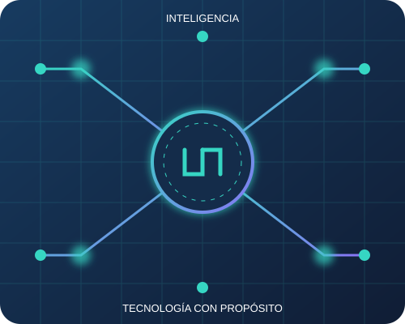

◷
Organización personal
Utilizar calendarios y asistentes digitales para organizar actividades, establecer metas y aprovechar mejor nuestro tiempo.
Descubre cómo aprovechar la inteligencia artificial y las herramientas digitales para aprender, desarrollar buenos hábitos y contribuir positivamente a la sociedad mexicana.
EXPLORAR CONTENIDO →
No se trata solamente de utilizar dispositivos o aplicaciones. Se trata de aprovechar la innovación para resolver problemas, adquirir conocimientos, mejorar nuestra calidad de vida y generar oportunidades para los demás.
Las herramientas digitales pueden ayudarnos a administrar mejor nuestro tiempo y desarrollar costumbres positivas.
Utilizar calendarios y asistentes digitales para organizar actividades, establecer metas y aprovechar mejor nuestro tiempo.
Aprovechar cursos gratuitos, plataformas educativas e inteligencia artificial para adquirir nuevos conocimientos.
Reducir distracciones, controlar el tiempo frente a las pantallas y dedicar más tiempo a actividades importantes.
En México, la tecnología puede convertirse en una herramienta para impulsar la educación, apoyar a los negocios y proteger el medio ambiente.
Crear materiales educativos, explicar temas difíciles y facilitar el aprendizaje de estudiantes.
Ayudar a pequeños negocios a organizarse, crear publicidad y mejorar sus servicios mediante herramientas digitales.
Promover el ahorro de energía, reducir desperdicios y compartir información sobre el cuidado del planeta.
El verdadero progreso tecnológico ocurre cuando sus beneficios llegan a las personas y ayudan a construir una sociedad mejor.
Algunos ejemplos de herramientas digitales y sus posibles beneficios.
| Herramienta | Aplicación | Beneficio |
|---|---|---|
| Inteligencia artificial | Apoyo educativo | Facilita el aprendizaje |
| Calendarios digitales | Organización | Mejor uso del tiempo |
| Plataformas educativas | Capacitación | Nuevas oportunidades |
| Herramientas digitales | Conciencia ambiental | Promueve el cuidado del entorno |
Explora algunas plataformas que permiten aprender y aprovechar la tecnología.
Asistente de inteligencia artificial para aprender, organizar ideas y resolver dudas.
Visitar plataforma ↗Plataforma educativa con recursos para aprender distintas materias.
Visitar plataforma ↗¿Cómo utilizarías la tecnología para mejorar tu comunidad? Comparte una idea.
Formulario demostrativo para fines académicos.